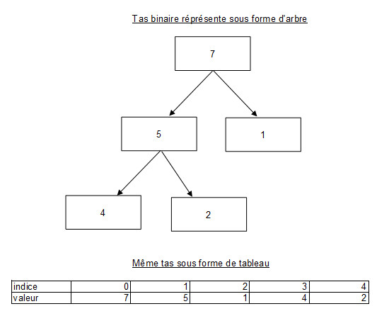

Nous allons découvrir ici un algorithme de tri original : le tri par tas. Cet algorithme de tri par comparaison est de complexité asympotiquement optimal car de complexité O(n log n). En termes moins barbare ça signifie que à la différence du tri par insertion où lorsque l'on double la taille de l'entrée, on multiplie par 4 le nombre d'opérations effectuées par l'algorithme; le tri par tas ne multipliera, dans les mêmes circonstances, qu'environ par 2 (un peu plus en réalité, mais lorsque n est grand c'est négligeable) le nombre d'opérations. D'où le terme d'algorithme de tri optimal pour de grandes entrées.
Les différents algorithmes seront implémentés en OCaml, cependant ils seront expliqués en détail et donc facilement transposables dans votre langage préféré.
Le tas (heap en anglais) peut être représenté comme un arbre binaire presque complet. Pour rappel un arbre binaire est dit complet si toutes ses feuilles sont de même profondeur.
On peut définir deux sortes de tas binaires : les tas min et les tas max.
Tas-min : chaque élément est supérieur à son parent.
Tas-max : chaque élément est inférieur à son parent.
Le tas peut être stocké de façon très simple dans un tableau. Soit i l'indice d'un noeud. Les indices de son parent, enfant de gauche, et enfant de droite sont calculables de manières très simple.
let parent i = (i - 1) / 2;;
let enfant_gauche i = 2 * i + 1 ;;
let enfant_droite i = 2 * i + 2;;
On rajoute +1 et +2 car la racine du tas a pour index 0 et non 1.

Entassement
La plus importante des opérations que l'on effectue sur les tas est l'entassement. On va maintenant supposer que l'on utilise un tas-max représenté par un tableau a. Le rôle de la fonction entasser-tas est de faire respecter la propriété suivante du tas-max :
a.(parent i) >= a.(i)
Concrétement, soit un noeud i, entasser-tas va faire "descendre" le noeud i dans le tas max jusqu'à ce qu'il respecte cette règle. Pour coder cette fonction, on attend de l'utilisateur qu'il nous fournisse la taille actuelle du tas.
On définit aussi permuter qui nous sera souvent utile par la suite.
let permuter a i j =
let tmp = a.(i) in
a.(i) <- a.(j);
a.(j) <- tmp;;
let rec entasser_tas a taille i =
let gauche = enfant_gauche i in
let droite = enfant_droite i in
let max = ref 0 in
if gauche <= taille - 1 && a.(gauche) > a.(i)
then max := gauche
else max := i;
if droite <= taille - 1 && a.(droite) > a.(!max)
then max := droite;
if !max <> i then begin permuter a i !max;
entasser_tas a taille !max;
end;;
entasser-tas vérifie donc que le noeud en question est supérieur à ses deux enfants. Si ce n'est pas le cas, elle permute ce noeud avec le plus grand de ses enfants. Pourquoi ? Si on avait permuté le noeud avec le plus petit de ses deux enfants, ce dernier se retrouverait parent d'un enfant plus grand que lui. Et donc contradiction avec la propriété du tas max. Une fois les deux noeuds permutés on rappelle entasser_tas sur le noeud qui est alors "descendu". Dans le pire des cas, entasser-tas effectue lg n opérations, puisque la hauteur d'un tas à n éléments est lg n.
Convertir un tableau en tas
Le problème est le suivant : soit un tableau A de n éléments, on souhaite le converir en tas max. L'idée est d'entasser chacun des noeuds du tableau, ainsi touts les noeuds seront à une place qui ne contredira pas la propriété du tas-max. On remarque qu'il est inutile de lancer entasser-tas sur les éléments du sous-tableau a [(n/2)+1, .., n] puisque ces éléments sont des feuilles du tas.
L'implémentation de la fonction creer-tas est donc simple :
let creer_tas a taille =
for i = taille/2 downto 0
do
entasser_tas a taille i
done;;
creer-tas appelle n fois entasser-tas dont le cout est de O(lg n). On peut donc majorer le nombre d'opération effectué par creer-tas par O(n lg n). Cependant, on peut en fait affiner notre majoration et démontrer que creer-tas s'exécute en temps linéaire : O(n).
Pour les curieux (cette démonstration est tirée du Cormen), c'est ici.
Pour ceux qui ont remarqué, ce n'est par hasard que l'on fait itérer la boucle de taille/2 à 0 au lieu de faire l'inverse, dans ce sens entasser-tas effectuera moins d'opérations.
Nous avons maintenant tout les fonctions nécessaires pour coder notre algorithme de tri par tas. Le principe est le suivant : On convertit notre tableau en tas-max. Le tas max nous garantit que la racine du tas est le plus grand élément du tas. On permute donc la racine avec le dernier élément du tas. On entasse alors la nouvelle racine qui n'est plus à sa place. On réitère alors cette opération avec la nouvelle racine du tas.
Cela donne :
let tri_par_tas a taille =
creer_tas a taille;
for i = taille-1 downto 1 do
permuter a 0 i;
entasser_tas a i 0;
done;;
Un petit test :
# let t = [| 1; 3; 9; 1; 4; 0|];;
val t : int array = [|1; 3; 9; 1; 4; 0|]
# tri_par_tas t 6;;
- : unit = ()
# t;;
- : int array = [|0; 1; 1; 3; 4; 9|]
Efficacité
La complexité de tri-par-tas est facilement calculable : creer-tas prend un temps O(n) entasser-tas prend un temps O(lg n). Cette procédure est appelé n-2 fois donc les différents appels de entasser-tas prennent un temps O(n lg n).
Au final le tri-par-tas prends bien un temps O(n log n) comme annoncé en introduction.
J'ai codé une fonction comparer-tri pour pouvoir comparer le temps que mettent 2 fonctions de tri pour trier des tableaux de grandes tailles que l'on a rempli au hasard. En fait comparer-tri fait effectuer n tri de tableau de taille taille_entree.
let comparer_tri tri1 tri2 taille_entree n =
let remplir_tab n =
Random.self_init ();
let rand i = Random.int 50 in
Array.init n rand
in
let temps_tri tri =
let t1 = Sys.time () in
for i = 0 to n do
tri (remplir_tab taille_entree) taille_entree;
done;
print_float (Sys.time () -. t1);
print_newline ();
in
print_string "tri 1 : "; temps_tri tri1;
print_string "tri 2 : "; temps_tri tri2;;
Voici les résultats quand on compare le tri par tas avec le tri à bulle (de complexité O(n²)) :
Avantage donc au tri rapide. A noter que la différence est tout même largement inférieur qu'avec le tri à bulle.
Introduction aux files de priorité
Pour conclure, je voudrais rapidement introduire les files de priorité. Le tas n'est évidemment pas utilisé seulement dans le cadre du tri par tas. Une de ses utilisation importante est l'implantation de file de priorité. Ces files de priorités sont notemment utilisé dans le cadre des algorithmes de plus court chemin (comme l'algorithme de Dijkstra) pour connaître le prochain noeud à visiter.
Pourquoi on utilise des tas en tant que file de priorité ?
Souvenez vous de la propriété du tas-min. La racine d'un tas contient la valeur la moins importante du tas. Donc dans un tas-min on peut accéder en temps constant à la plus petite valeur du tas. Dans le cadre d'un algorithme de plus court chemin, cette valeur peut par exemple être la distance de la racine au noeud étudié. Bref, si un jour vous avez besoin d'une structure de donnée qui doit vous permettre de connaitre la plus grande ou plus petite valeur d'un ensemble, implanter un tas peut être une bonne idée. Vous avez maintenant tout les outils en main pour le faire.
Références
Introduction à l'algorithmique, Cormen, 2ème édition Tas : http://fr.wikipedia.org/wiki/Tas_(informatique) Tri par tas : http://fr.wikipedia.org/wiki/Tri_par_tas